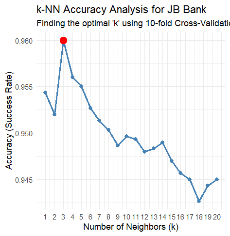
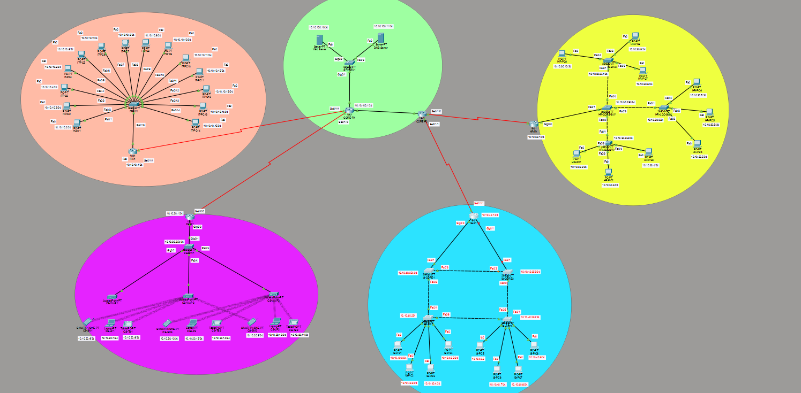
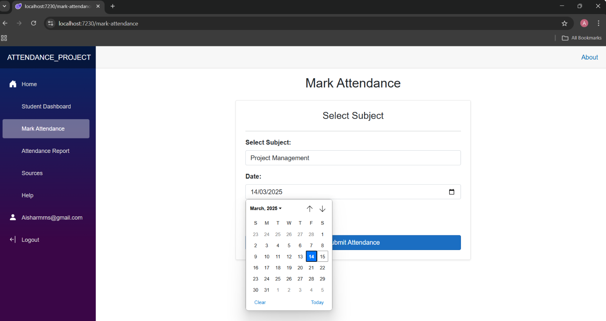
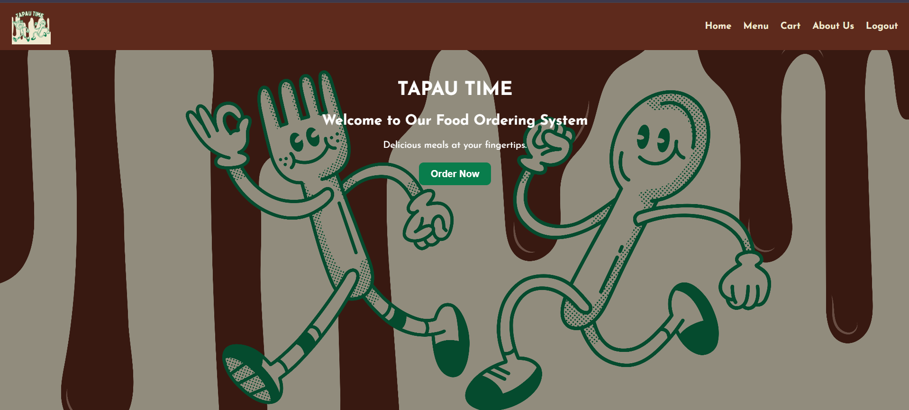
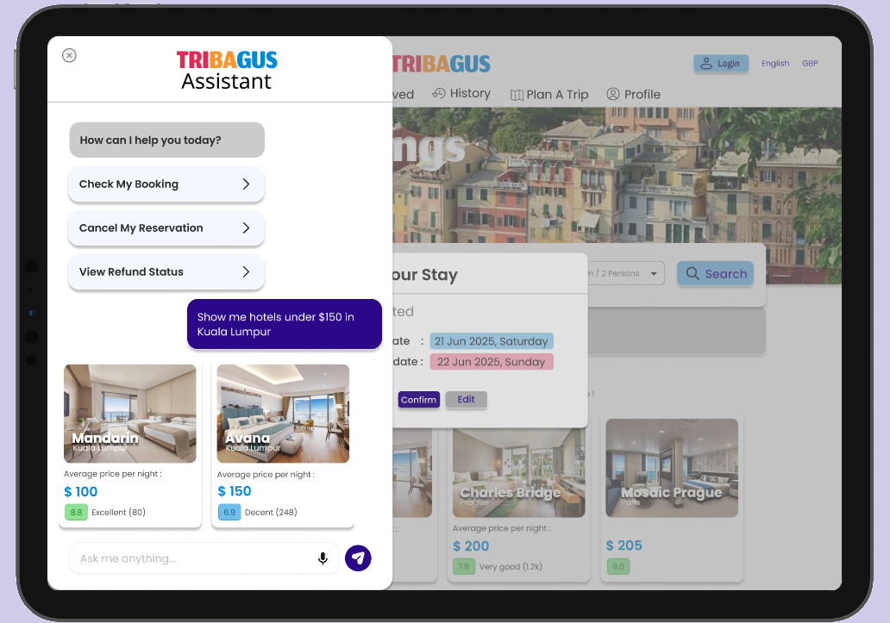
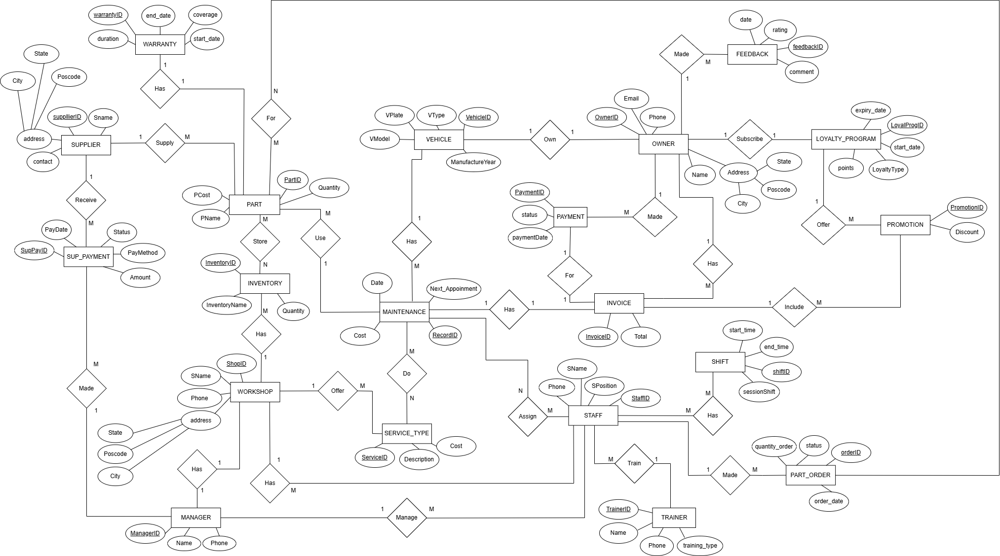

Academic Projects

Bank Prediction Model
2026
Developed a predictive analytics model using R to analyse 5,000 banking records and identify target customers eligible for loan offers using machine learning techniques.
View Project Code
IoT Flight Monitoring System
2026
Developed a flight tracking system with a real-time interactive dashboard and heat map features to identify potential flight danger zones.
View Project Code
Secure Enterprise Network Design
2025
Designed and configured a secure multi-department enterprise network using Cisco Packet Tracer, integrating SSH, SNMP, and firewall rules.
View Code Repository
Attendance Management System
2025
Developed a complete student and teacher attendance management application utilizing OOP concepts like inheritance and polymorphism.
View Project Code
UTP Cafeteria & Food Ordering System
2025
Designed and built a full-stack web application named 'TapauTime' to eliminate operational inefficiencies at the university cafeteria. Developed user registration/authentication, secure roles for customers and administrators, digital menu browsing with special food customization requests, and live multi-state order status tracking ("Preparing" to "Delivered"). Includes an offline fallback queue mechanism to guarantee order stability during unexpected campus network disruptions.
View Project Code
Tribagus Hotel Booking Platform (Redesign)
2025
Served as a core UX/UI engineer for a redesigned travel metasearch engine built entirely on HCI fundamentals to solve cluttered interfaces and non-transparent pricing. Programmed interactive architectures featuring predictive voice-to-text workflows ("I'm listening..." state feedback), context-aware persistent bottom menus, budget allocation metrics per country, and clear, color-coded multi-state confirmation paths.

Vehicle Maintenance Scheduling System
2024
Designed a relational database system normalized up to 3NF, establishing structural tracking for schedules, inventory, and invoices.
View Project
WheelyShare System (Scooter Rental Platform)
2024
Collaborated in a team of 8 to propose 'WheelyShare,' an innovative eco-friendly campus micro-mobility rental platform. Engineered operational logistics, mapped systemic user workflows, and implemented core system interfaces using Visual Basic to streamline fleet availability tracking and customer operations.
View Canva Pitch PresentationAI-Powered Food Waste Management System
Active — Technopreneurship
Developing a sustainable business model and technical framework for an AI-powered food waste mitigation platform. Engineering predictive inventory tracking models and optimization workflows to reduce waste in commercial ecosystems while aligning with UN Sustainable Development Goals (SDG 12).